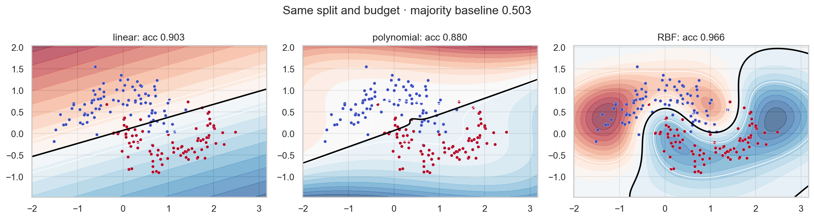

ML Hands-on Lab · 02 — Kernel methods
SVMs and kernels
1. The one-sentence version
An SVM chooses the widest separating margin, while a kernel lets that margin become curved in the original input space.
2. The intuition
Imagine laying the widest possible road between two crowds. Only the people nearest the curbs determine the road; a kernel bends the map before you lay it.
A five-item example
For five signed distances [-2, -0.4, 0.1, 0.8, 2], the points near zero constrain the boundary. Moving the far points barely changes the margin; moving -0.4 or 0.1 can.
3. The maths in plain English
\[\min_{w,b,\xi}\ \tfrac12\lVert w\rVert^2+C\sum_i\xi_i,\quad y_i(w^Tx_i+b)\ge 1-\xi_i\]
w controls boundary orientation and its norm controls margin width. ξ records each violation. C says how expensive violations are: larger C bends harder to classify training points.
4. What the model is actually doing during training
- Standardize coordinates using training statistics.
- Compute pairwise similarities using the chosen kernel.
- Find the boundary with the widest margin subject to C-weighted violations.
- Keep only points with nonzero dual weight: the support vectors.
5. The knobs
| Knob | Too low | Too high |
|---|---|---|
| C | Wide margin with more errors. | Narrow, sample-sensitive boundary. |
| gamma | RBF looks nearly linear. | Each point gets a tiny influence island. |
| kernel | May underfit curved structure. | Complexity and tuning cost increase. |
6. Assumptions and failure modes
Distances must be meaningful after scaling. The useful boundary should be expressible by the kernel, and test examples should resemble training examples. Training cost grows poorly with sample count.

7. Code
Minimal version
from sklearn.svm import SVC
model = SVC(kernel="rbf", C=2, gamma="scale").fit(X_train, y_train)
prediction = model.predict(X_test)Realistic version
from sklearn.pipeline import make_pipeline
from sklearn.model_selection import GridSearchCV
pipe = make_pipeline(StandardScaler(), SVC())
model = GridSearchCV(pipe, {"svc__C":[.1,1,10],
"svc__gamma":[.1,1], "svc__kernel":["rbf"]}, cv=5).fit(X_train,y_train)8. Where it's actually used
- Handwriting recognition when training sets are moderate.
- Bioactivity screening with molecular similarity kernels.
- Defect classification from engineered sensor summaries.
- Text categorization with linear SVMs on sparse word features.
9. How it relates to its neighbours
Logistic regression gives calibrated probabilities more naturally but does not maximize a margin. k-NN also depends on distance yet stores local examples rather than learning a boundary. Kernel ridge and Gaussian processes use the same similarity idea for regression.